Data Center Networks: Migration & Transportation
Sepehr Abbasi Zadeh
Summer 2023 - EPFL
Summer 2023 - EPFL
University of Toronto

Huawei Canada
Data Center Networks
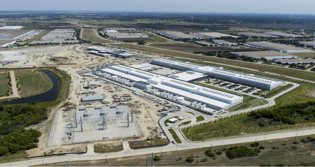
Data Center Communications
Route Management
- Maintain isolation
- Follow SLAs
- Support migration of virtual entities
Rate Management
- Minimize collisions
- Maximize utilization
- Ensure fair transportation
Route Management
Focus: Migration
- Protocol design
- Batch scheduling
- Cut the tail latency
- Migrate a sub-network
Rate Management
Focus: Transport Layer
- Scout: A novel congestion signal
- A Scout-Based Congestion Control
- Augmenting TCP/IP Stack via eBPF
MIGRATION
Virtualization and Packet Switching
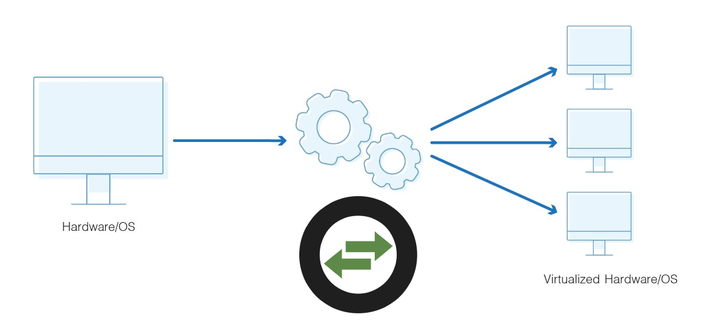Combination of these vSwitches forms a distributed control plane.
Load Migration
- Network load fluctuates
- So load on the end hosts (hypervisors)
- Results in longer response time
- And slower data path
This can be mitigated via load migration.
Therefore, network controllers should also be migrated.
Migration Consistency
- Network consistency matters!
- Under CAP theorem, one of the following cannot be satisfied:
- Consistency
- Availability
- Partitioning
As a result, any consistent migration protocol has a blackout time.
As the total migration time is relatively small, we provide a buffering mechanism to bring back the availablity.
The main problem reduces to cutting the blackout time of a migration.
Protocol Enhancement
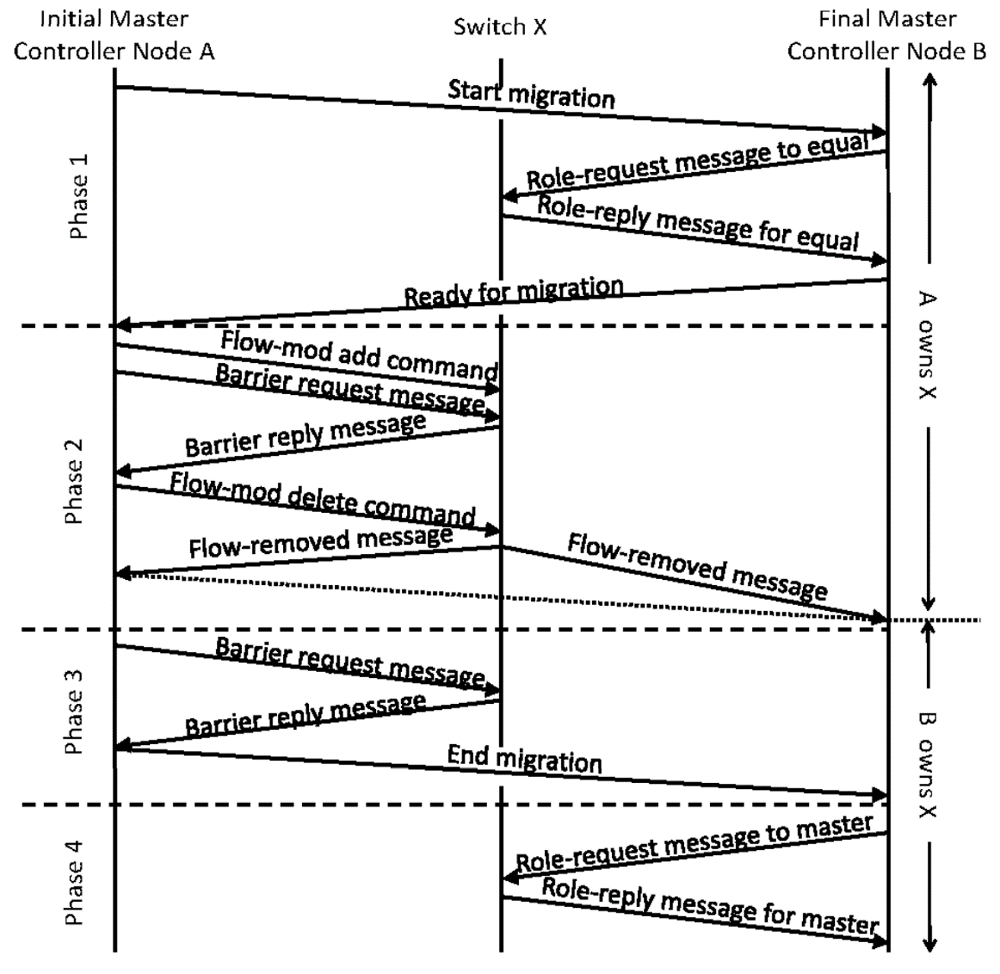
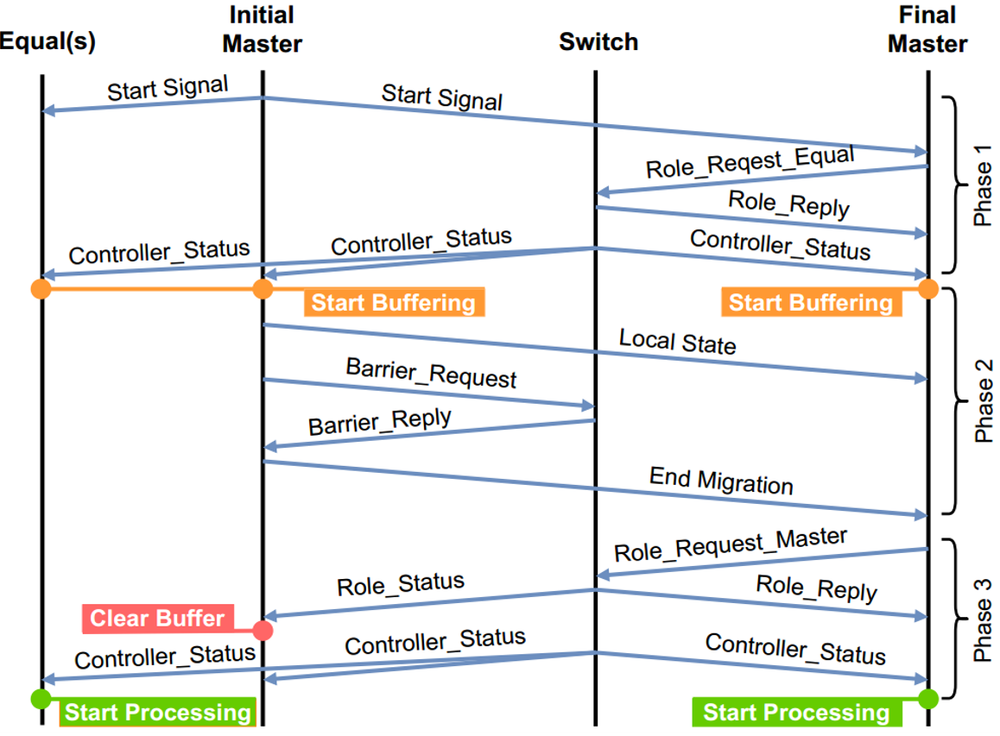
Protocol Enhancement
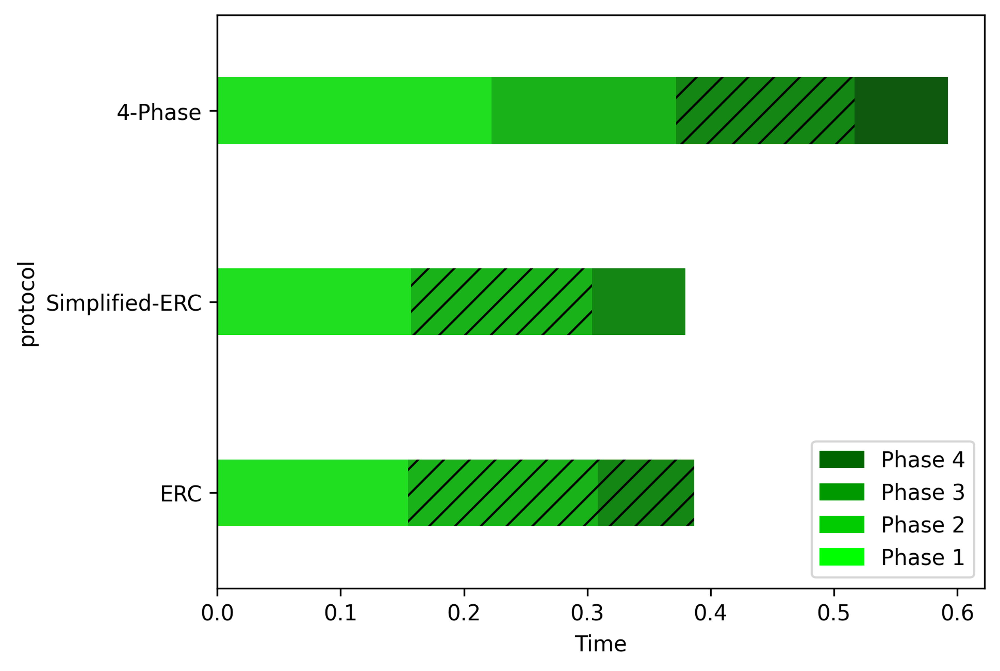
- 23-50% migration speedup
- Efficient
- Resilient
- Consistent
Batch Scheduling
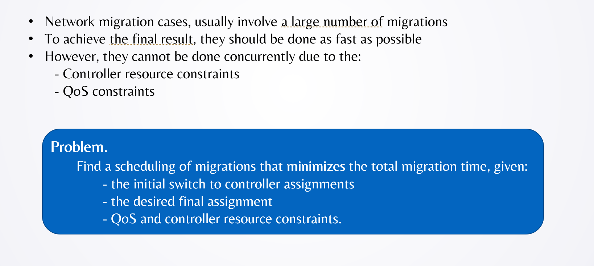Batch Scheduling
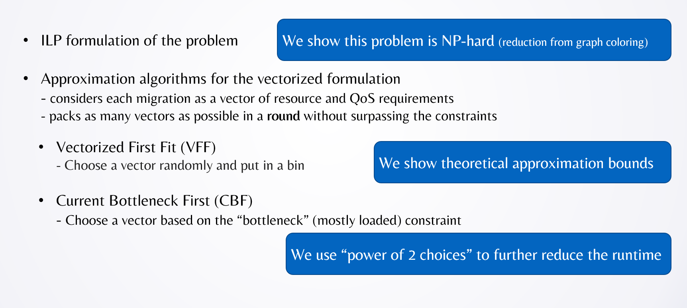Batch Scheduling
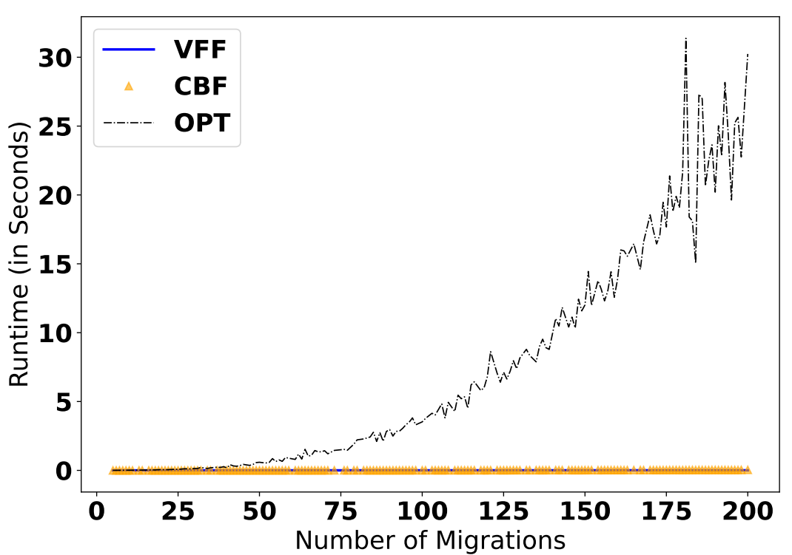- # of migrations ↑ → time of ILP (OPT) grows exponentially
- In many experiments ILP did not finish in a 10 day timeout period
- Both VFF and CBF finish in a few milliseconds
- In certain scenarios, CBF was only off from OPT by 1 round
Live Stateful Sub-Network Migration
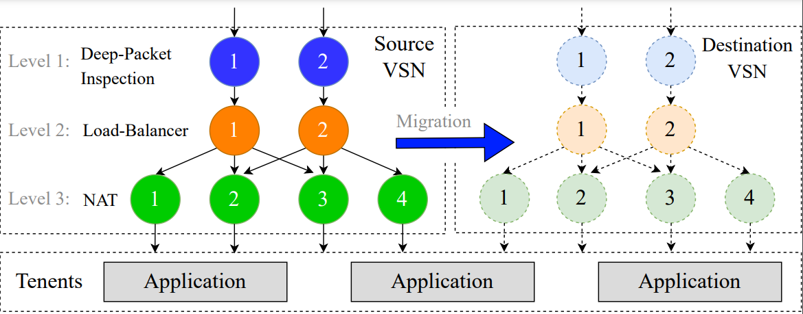- Per-connection consistency
- In-order packet delivery
- VNF policy enforcement
- Failure tolerance
Live Stateful Sub-Network Migration
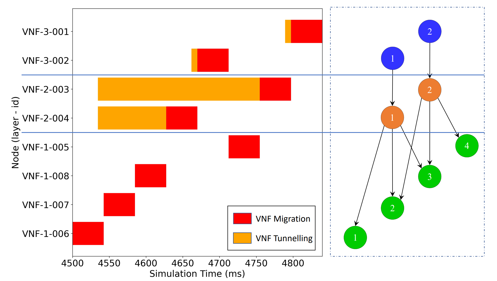
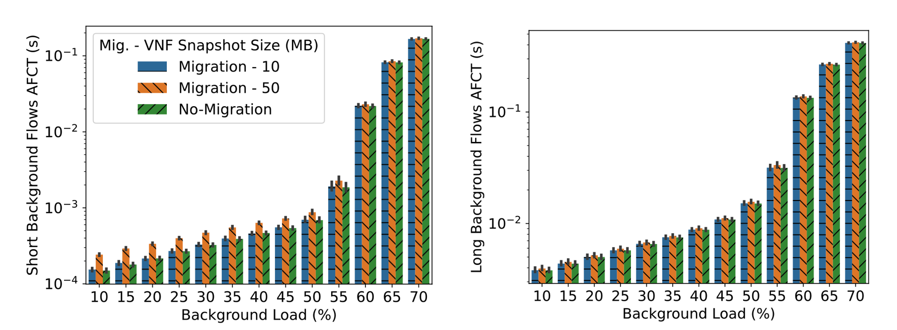
Meta Migration
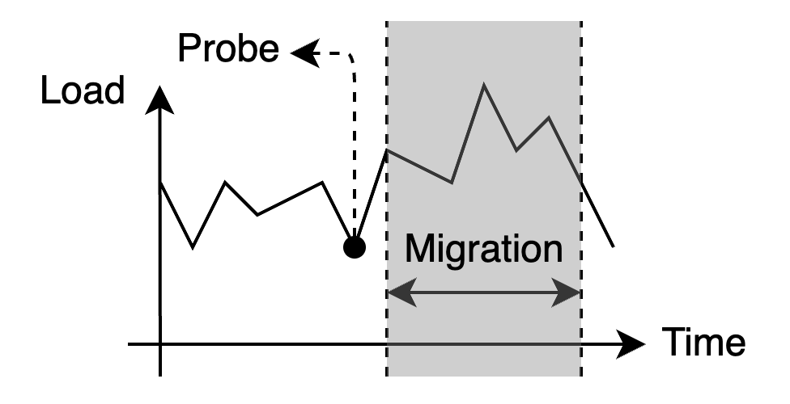
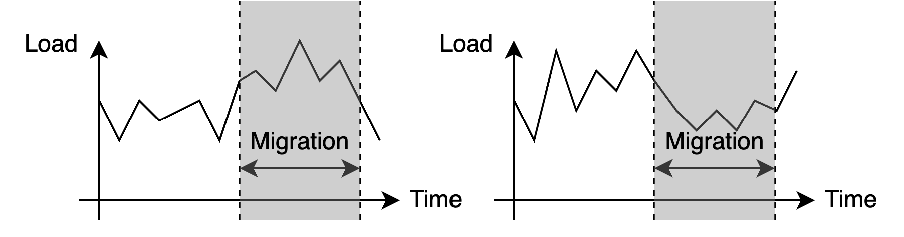
Meta Migration
- Run the protocol toward all candidates
- First to reach committing point is the winner
- Roll back migration for others
- Finalize for the successful candidate
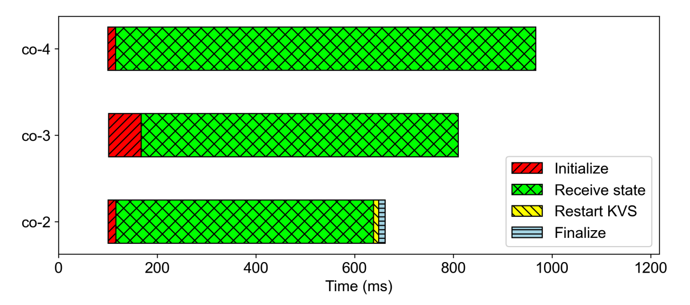
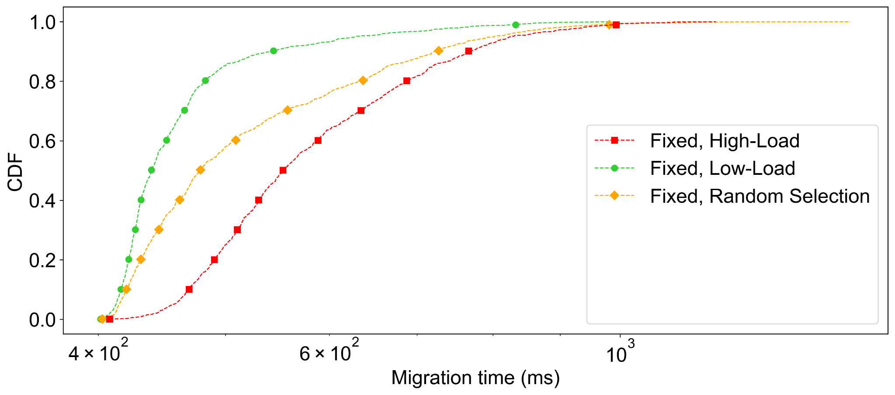
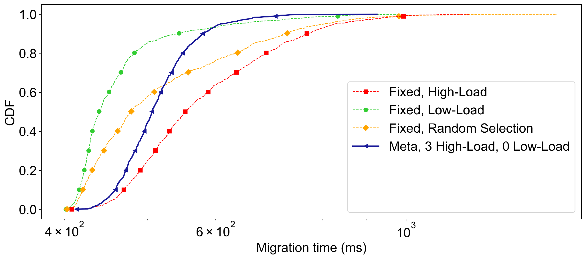
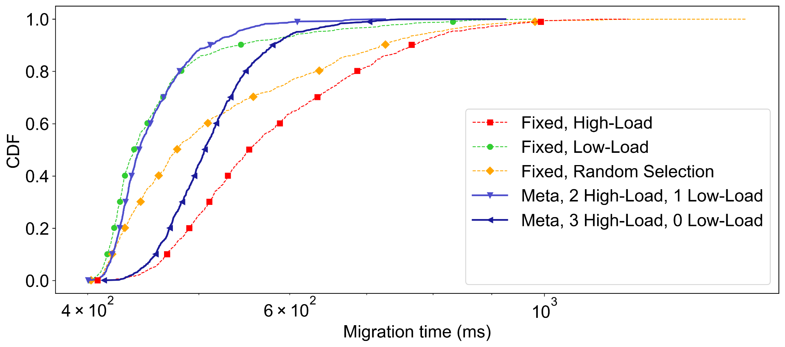
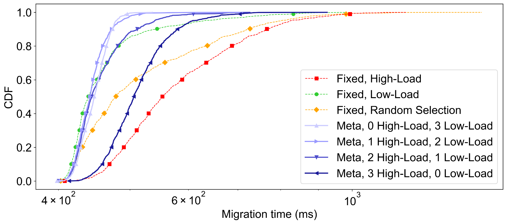
TRANSPORTATION
Congestion
- Applications demand network bandwidth
- Overshooting results in drop
- Underutilization is wasteful
- The sending rate should be adjusted
- End hosts make these decisions based on signals
Congestion signals
- Packet Drop
- RTT Delay Measurement
- Explicit Congestion Notification (ECN)
- In-band Network Telemetry (INT)
- Scout
Scout
- We periodically send small probe packets
- These packets are sent with lower priority than data
DCN Scout-Based Congestion Control
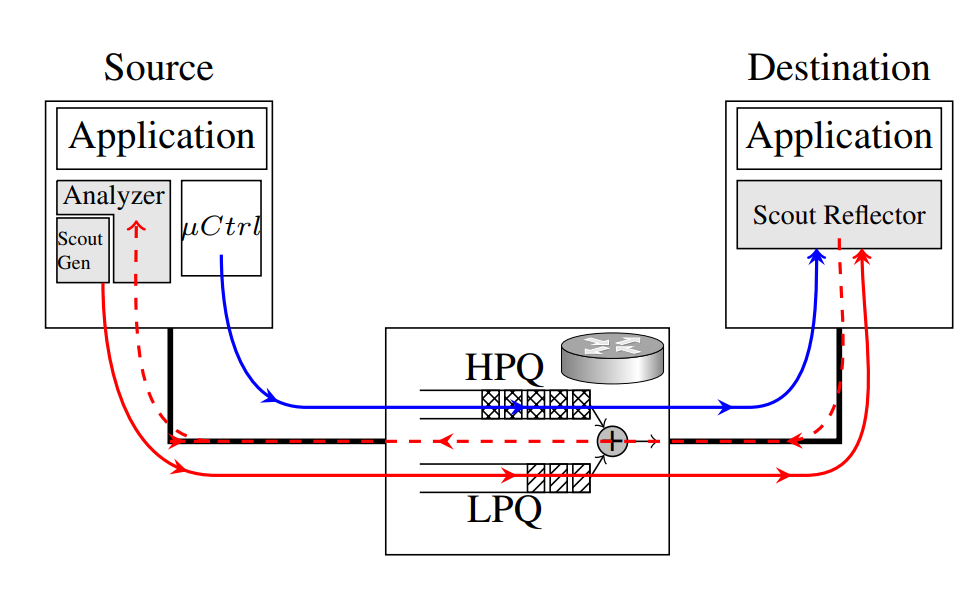Implementation Challenges
- Linux TCP is complicated
- Transparency: Application-layer sockets should remain intact
- Short-RTT DCN: User-level applications have high context switching overhead
- ECMP routing: Out-of-band probes should integrate with TCP socket
- Maintenance at scale: Kernel code should not be touched!
eBPF is the solution.